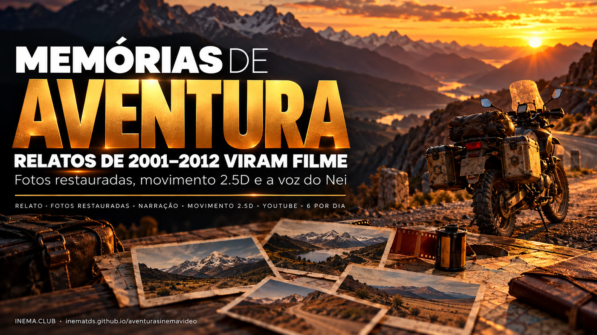
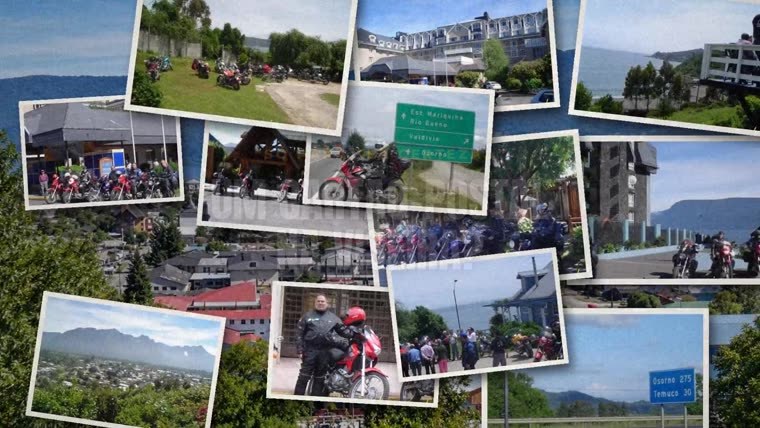
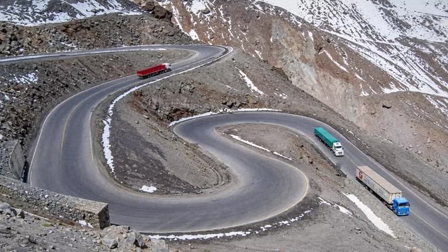
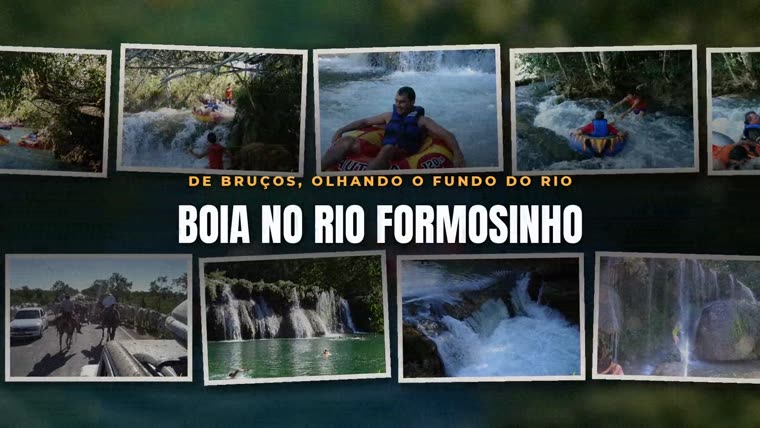
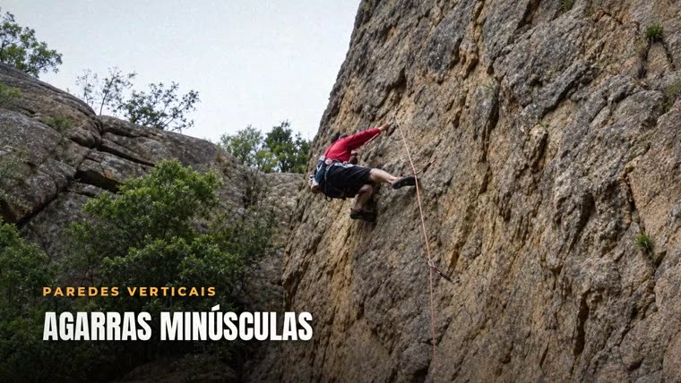
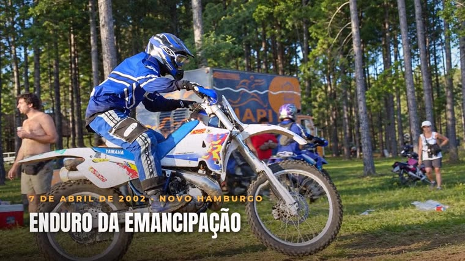
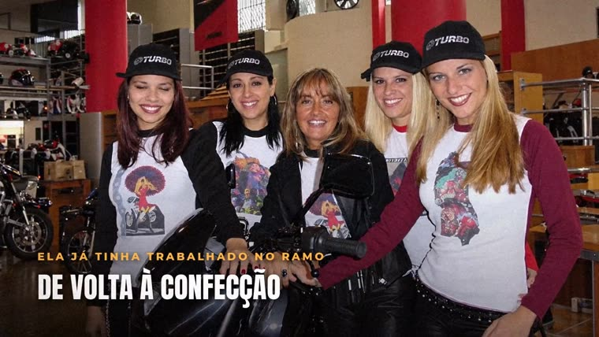
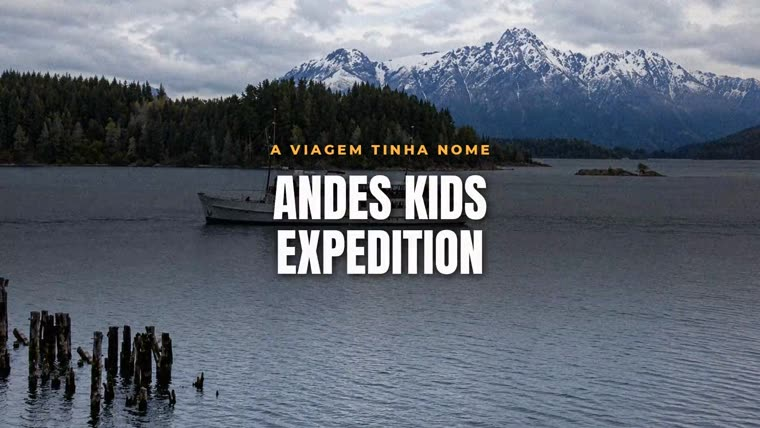

Viagens de moto, expedições de jipe e escaladas contadas no INEMA Aventura ganham narração, fotos restauradas e movimento — e vão para o YouTube.

O aventurasinemavideo é o projeto que produz a série Memórias de Aventura. Ele pega matérias reais do acervo do INEMA Aventura (aventura.inema.club, de 2001 a 2012), com o relato e as fotos que os próprios aventureiros enviaram, e transforma cada uma num filme narrado de um a três minutos. Serve para quem viveu aquelas histórias e para quem gosta de aventura: os filmes saem de graça no canal Aventuras INEMA no YouTube. Para assistir, basta abrir o canal; o repositório guarda as regras e o motor que monta os filmes.
O INEMA Aventura reuniu, entre 2001 e 2012, relatos e álbuns de fotos de motociclistas, jipeiros, escaladores e viajantes. Esta série tira essas histórias do arquivo e as conta de novo, em vídeo.
O roteiro sai do relato original e das fotos do álbum. Nada é inventado além do que o texto e as imagens mostram.
As fotos de câmera digital dos anos 2000 são restauradas e ganham movimento: profundidade, pilhas, faixas e mosaicos.
A narração usa a voz do Nei Maldaner, criador do INEMA, e cada história recebe trilha sonora e letreiros.
Cada episódio passa pelas mesmas etapas. Em linguagem simples:
Só entra matéria com texto próprio da aventura (pelo menos 250 palavras) e um álbum com pelo menos 12 fotos grandes.
O relato vira de 9 a 15 blocos de fala. Anos e números são escritos por extenso, e a narração é conferida palavra por palavra antes de seguir.
Cerca de 12 fotos são restauradas, ganham um mapa de profundidade para o efeito 2.5D e são montadas com a voz, a trilha e os letreiros.


A meta é que toda matéria do acervo com relato e imagens vire vídeo. Para isso, a série segue um ritmo fixo.
Seis episódios publicados a cada dia no canal Aventuras INEMA.
Dois vídeos por dia de matérias de assinantes do acervo. Conta matéria, não pessoa.
Quatro vídeos variando os assuntos (moto, trilha, escalada, jipe, cavalgada, viagem), no máximo um por pessoa.
Quem enviou a história recebe por e-mail o link do vídeo, o link para baixar e o link do canal.
Todos no canal Aventuras INEMA. Clique na imagem para assistir.





Para quem quer entender (ou reproduzir) o processo. Os scripts estão na pasta motor/ do repositório; o exemplo completo é o episódio 6 (motor/filme_exemplo_guilherme.py e motor/roteiro_exemplo_guilherme.md). Tudo roda no computador local, com a voz e a restauração de imagem pela assinatura.
Cada episódio ganha uma pasta própria, copiada de um episódio pronto. Junta-se o texto da matéria e as fotos grandes do álbum, e as fotos são classificadas por categoria e nota.
# pasta do episódio, a partir de um pronto cp -r ~/projetos/output/memorias-aventura-guilherme ~/projetos/output/memorias-aventura-<slug>
O roteiro.md tem de 9 a 15 blocos, só com o que o relato e as fotos contam. Anos e números vão por extenso na fala, para a voz não errar.
# modelo de roteiro cat motor/roteiro_exemplo_guilherme.md
Um áudio por bloco, na voz do Nei. Depois o áudio é cortado, ganha ritmo e volume, e é transcrito palavra por palavra. Palavra errada = reescrever a frase e gravar de novo.
bash motor/tts.sh # narração por bloco (voz nei) python3 motor/pos_voz.py # corte, ritmo, volume e transcrição
Monta-se a linha do tempo e a trilha (voz + música), as fotos antigas são restauradas e ganham mapa de profundidade para o movimento 2.5D.
python3 motor/linha.py bash motor/mixar_trilha.sh python3 motor/remaster_codex.py # restaura ~12 fotos python3 motor/preparar_rm.py node motor/gerar_depth.mjs # mapa de profundidade
O filme é composto bloco a bloco (pilha, faixa, mosaico, profundidade e letreiros). Antes de publicar, conferem-se os quadros de cada bloco e a duração.
python3 filme.py # todos os blocos + montagem final python3 filme.py B03 # refaz só um bloco
O vídeo sobe para o canal Aventuras INEMA pelo yt-pubx, primeiro em simulação para conferir o texto. Depois entra a descrição completa, o autor recebe o aviso por e-mail e o episódio é registrado em EPISODIOS.md.
yt-pubx publicar <video.mp4> --canal aventuras --dry-run yt-pubx publicar <video.mp4> --canal aventuras --plano <pasta>/plano.json --sem-thumb python3 montar_descricoes.py <ep> # descrição completa python3 enviar_email.py <ep> # aviso ao autor
O que já foi feito e o que ainda limita o ritmo.